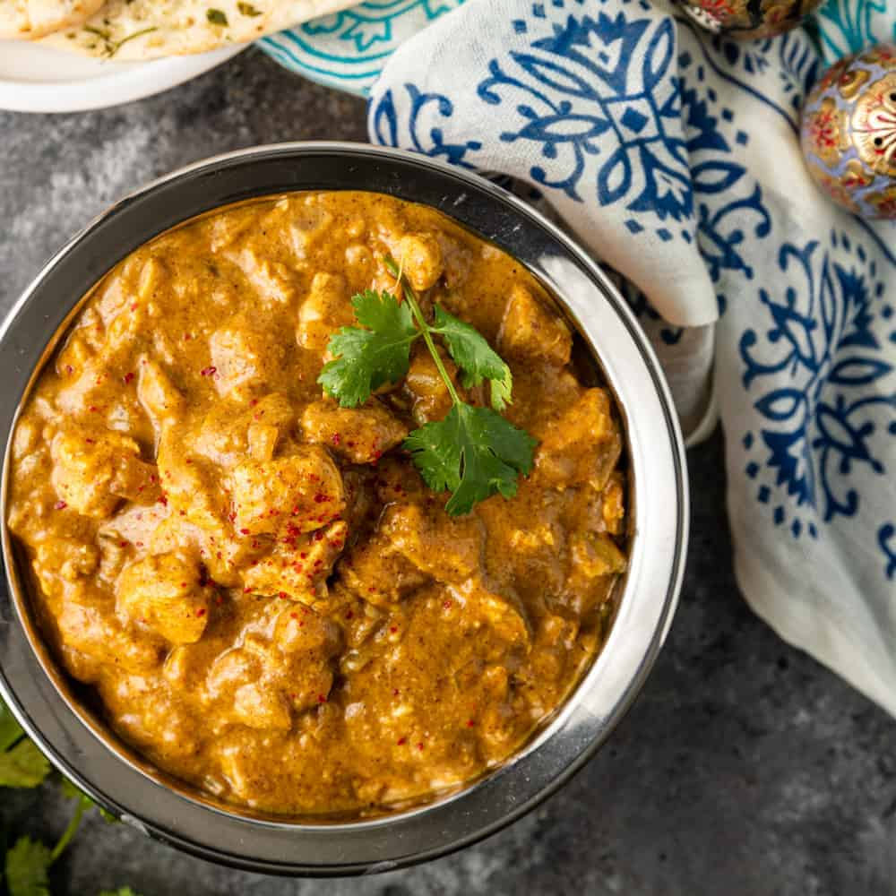

Chicken Korma

Want a curry without too many calories? Use fat-free Greek yogurt instead of cream for a healthy korma that will give your local takeaway a run for its money
A really rich and creamy chicken korma recipe with tender chicken breast pieces in a mildly spiced curry sauce.
You could use chicken thigh fillets as an alternative if you prefer.
Ingredients
- 1 onion, chopped
- 2 garlic cloves, roughly chopped
- thumb-sized piece ginger, roughly chopped
- 4 tbsp korma paste
- 4 skinless, boneless chicken breasts, cut into bite-sized pieces
- 50g ground almonds, plus extra to serve (optional)
- 4 tbsp sultanas
- ¼ tsp golden caster sugar
- 150g pot 0% fat Greek yogurt
- small bunch coriander, chopped
Instructions
-
Put 1 chopped onion, 2 roughly chopped garlic cloves and a roughly chopped thumb-sized piece of ginger in a food processor and whizz to a paste.
-
Tip the paste into a large high-sided frying pan with 3 tbsp water and cook for 5 mins. Add 4 tbsp korma paste and cook for a further 2 mins until aromatic.
-
Stir 4 skinless, boneless chicken breasts, cut into bite-sized pieces, into the sauce. Add 50g ground almonds, 4 tbsp sultanas, 400ml chicken stock and ¼ tsp golden caster sugar.
-
Give everything a good mix, then cover and simmer for 10 mins or until the chicken is cooked through.
-
Remove the pan from the heat, stir in a 150g pot Greek yogurt and some seasoning, then scatter over a small bunch of chopped coriander and more ground almonds, if using. Serve with brown or white basmati rice.
Return to top
Return to main page